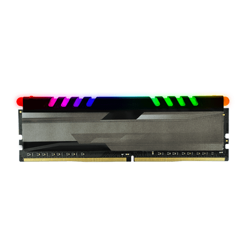
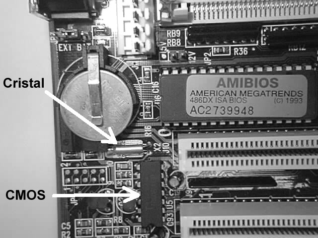

6.Defina os diversos tipos de memória:
- a. RAM
Memória de acesso randômico ou Memória de acesso aleatório é um tipo de memória que permite a leitura e a escrita, utilizada como memória primária em sistemas eletrônicos digitais

- DDR: Double Data Rate Synchronous Dynamic Random Access Memory é uma classe de memória de acesso aleatório dinâmico síncrono de taxa de dados dupla de circuitos integrados de memória usados em computadores.
- DDR2: Double Data Rate 2 Synchronous Dynamic Random-Access Memory é uma interface de memória de acesso aleatório dinâmico síncrono de taxa de dados dupla. Ele substituiu a especificação DDR SDRAM original e foi substituído pelo DDR3 SDRAM. DDR2 DIMMs não são nem para a frente compatível com DDR3 e nem compatível com DDR.
- DDR3: Double Data Rate 3 Synchronous Dynamic Random-Access Memory é um tipo de memória de acesso aleatório dinâmica síncrona com uma interface de alta largura de banda e está em uso desde 2007. É o sucessor de alta velocidade para DDR e DDR2 e predecessor para chips de memória dinâmica de acesso aleatório síncrono DDR4.
- DDR4: Double Data Rate 4 Synchronous Dynamic Random-Access Memory é um tipo de memória de acesso aleatório dinâmica síncrona com uma interface de alta largura de banda.
- DDR5: DDR5 SDRAM é a abreviação oficial de Double Data Rate 5 Synchronous Dynamic Random-Access Memory. Em comparação com seu predecessor DDR4 SDRAM, o DDR5 foi planejado para reduzir o consumo de energia, ao mesmo tempo em que dobra a largura de banda.
Associe com qual processador /placa é utilizada:
- b. ROM: É utilizada na placa mãe pois lá fica guardada informações e configurações, que não podem ser alteradas.
- c. PROM: É exatamente igual a ROM com a diferença que é programada após a fabricação, normalmente é utilizada em Consoles de Videogames.
- d. EPROM: É igual as anteriores com a difrença de poder conseguir ser apagada. Para isso, no entanto, é necessário expô-la a uma forte luz ultravioleta ela éutilizada na criação de miroprocessadores de computadores.
- e. EEPROM: É igual a EPROM com a diferença que o conteúdo é apagado por sinais elétricos, como a anterior ela é uzada em microprocessadores de computadores
8. Comente sobre CMOS.
(Complementary metal–oxide–semiconductor), mais conhecido como CMOS, é um pequena memória RAM que armazena informações de configuração de hardware onde é guardada a sequência de boot por exemplo.

23. Quais os diversos tipos de armazenamento de dados que você conhece? Explique-os.
HDD e SSD: É uma memória externa que é onde todos os seus aquivos são salvos, e caso o pc é desligado nada é perdido (caso não seje usado a memória interna principal do computador).
O HDD ou Hd possui mais memória e é mais barato que eu um SSD porém ele possui partes mecânicas há chances de ser danificado é maior e que caso danificadas tudo será perdido.
O SSD é menor, mais rápido e aas chances de ter os arquivos perdidos é menor, porém ele é mais caro e possui menos armazenamento.
RAM: é a principal memória do computador que fica em constante uso onde fica armazenado temporariamente os dados porém se o computador é desligado tudo é perdido caso nao salvo.
como jogar ou mexer no navegador.
Topo